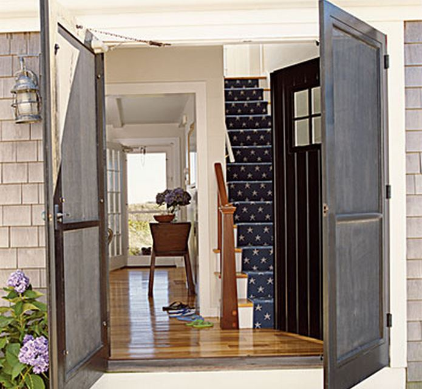
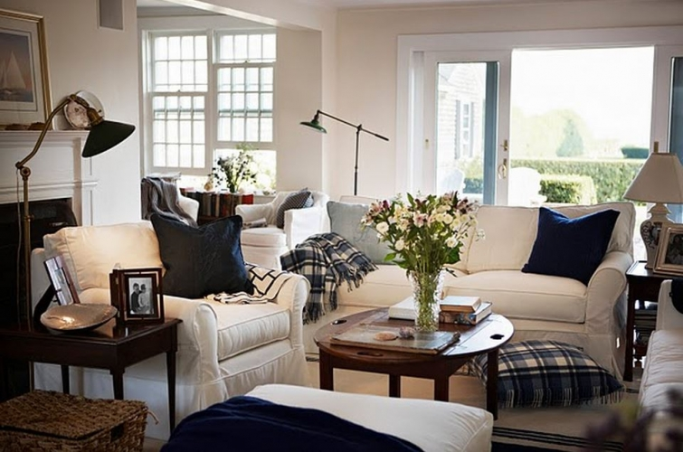

.png)
.PNG)
.PNG)
.PNG)
.PNG)
.PNG)
.JPG)
.JPG)
.PNG)
.PNG)


source
Happy Memorial Day weekend! We made it through the last week of school safe and sound. (Hallelujah!) This is the weekend that starts the summer for me, so I wanted to share with you these images of beach cottages. Aren’t you in the mood for being in one? Dressed in blue they are ready for summer. Grab something cold to drink (or a cup of coffee if you prefer.) 🙂 Then come on in and enjoy the eye candy here today.
Let’s start with a few living spaces.
summerhouse-kalinki.blogspot.com

And now a couple of places in your beach cottage for cooking and dining.
 summerhouse-kalinki.blogspot.com
summerhouse-kalinki.blogspot.com
And after a day on the water, come home to one of these dreamy bedrooms.
summerhouse-kalinki.blogspot.com
summerhouse-kalinki.blogspot.com
You’ll need a bed like this for the children.
And now a few bathrooms for a long soak or shower after a day in the sun. Let’s begin with a great soaking tub in a room bright with blue.
A few with more calming color schemes…
Now let’s go out on the porch.
Enjoy some time out on the patio…
or down at the boat house on the dock.
summerhouse-kalinki.blogspot.com
Here’s a little cottage that you can rent…complete with flowers blooming and a flag for the holiday weekend.
Have all these blues gotten you in the mood for summer yet?
I am headed out to do some major shopping today. Fingers crossed that I can find some items needed to finish the room over the garage. Hope your weekend is full of fun things…maybe a trip to the beach or floating in a pool?
We’d love to hear what you have planned! 🙂

p.s. You won’t believe who was on the blog and pinned an image from here…
Oh yeah! Pottery Barn! Doing the happy dance here. 🙂
Happy pinning y’all!


.PNG)
[…] source […]
[…] source […]
I am not surprised one bit! You are an amazing decorator, I wonder if when you retire you would find yourself working for a magazine? or perhaps home staging? you know you could come up with your own brand and people would go nuts! maybe make your blog into a coffee table book? I know id buy it! congrats on the pottery barn pin!
Kudos Kelly …Pottery Barn, very impressed by you as we all are.
Makes this Jersey Girl want a beach house more & more although I was scared by Hurricane Sandy and all the damage it did.
Love the blue and white theme, very “cool”.
Thanks for sharing as always.
Love all the blues, very soothing and they just say “cottage or beach living” so well. Just got back from the Cape, our weather, unfortunately, was not the best and all the tourists left this morning creating a massive traffic jam on the bridges. It was a very long ride home. My friends’ beach house has a few rooms done in blue – including the one I always stay in. Happy summer, hope it’s a wonderful one. I’m baking cookies for my husband’s lunches, they still have five weeks of school to go. (Took one of my MKA books that I won, with me, and am enjoying it immensely. They’re always such good beach reads. It was the only one I hadn’t read already, but I’m passing the rest on to friends that haven’t met MKA already.) Here’s to summer fun!
Kelly,
All of those nice coastal blues are so very calming. The lake house has lots of blues and tans in it but it is missing the smell and sound of the ocean. We will be relaxing at the lake with my parents, brother and his family all weekend. Congrats on the Pottery Barn Pin! That is awesome!
So enjoyed this post on my favorite color, BLUE! Hope your shopping mission was successful. I came home with a variety of red, white, and blue flowers yesterday and now on to the planting.
You go girl…Pottery Barn, my favorite store.
Have a great summer vacation!
Woo! Hoo! A pottery barn pin! Awesome! (I hope they start paying you! You could seriously be one of their designers.) I am glad you are out of school for the summer. My best two years of teaching were my first year and my last. I wish you could go out on this year….but who knows, maybe next year will be even better than this one. We spent our weekend at a fabulous wedding in Athens, Georgia on the UGA campus. It was too much fun! Good luck with your bonus room.
How can every one of your posts be my favorite!?! The navy runner going up the stairs in the first picture is so great. In future years I’m going to be hunting that down! Kelly, congrats on Pottery Barn recognizing you! It does not surprise me in the least-you are so good at what you do! Thanks for all of the eye candy (or should I say the really great eye meal!) and enjoy a wonderful summer!
Congratulations on 2 counts! The PB Pin is such a nice acknowledgement of your artistic eye and decorating AND you are finished wit the school year. 2 more days here-thanks to Mother Nature’s winter. I also had the best year teaching so far after my transition to the high school. Looking forward to a relaxing summer and maybe I’ll revive my blog…best intentions, right? Good luck shopping!
I love the blue and white décor. It says summer! I feel that we are starting to get some summer here. Congrats on the Pottery Barn pin.
Kelly,
The house with the blue shutters, please. And then I’ll select some of the lovely rooms to include in that charming house!
After several days this month of 90+ temps, the first day of the Memorial Day weekend is cool and cloudy, 68 degrees. Mother Nature is playing tricks on us!
I hope you are enjoying this first weekend of what I’m sure will be a wonderful, relaxing summer vacation for you and your darling family.
xo,
Karen
1. Yeah!!! I am getting notifications again for your new posts!
2. 2 more weeks until we leave for the beach (Emerald Isle NC) Your pictures of blue & white have me so ready!
3. Pottery Barn!!!! wow!!! what a compliment for your wonderful blog.
4. Hope you have luck on your shopping trip and a great weekend!!
Kelly, I planted my red and white geraniums in front of my blue sided house and the mighty flag is waving from its pole. Congrats on another yr. of being the fabulous teacher you are, especially in math.PB should contact you and send you free items to display in your home and then seen in your blog. They do that. I love your style!
I can TOTALLY believe that Pottery Barn would pin from your blog! 🙂 I’m telling ya, when you decide to retire from teaching, you have a whole new career just waiting for you…
Absolutely NOTHING planned here for the weekend–and I love it! Today is Nicholas Sparks day–I’m going to lounge around and read one of his latest paperbacks until I feel like doing something else. 🙂
Congrats on the Pottery Barn pinning…much deserved. You have fantastic ideas for tablescapes!! We are off to Memphis to visit with family this weekend.
Wow! Pottery Barn? How cool!
I’ve always had a thing for blue so I loved seeing these rooms.
Glad you made it through this week. I hope you enjoy your Summer.
Have fun shopping! I can’t wait to see what you find. You’re going to show us, right? 😀
Kudos to you for catching the attention of Pottery Barn! Just wondering what took them so long?! Enjoy the start of your vacation and keep up the good work!
I love your house!! Especially your kitchen. I’ve tried to find a mention of your paint colors in the kitchen, but only found Twine. Is that still your wall color? And what about cabinet color? I’d so appreciate knowing, as I’d like to use the same colors! Thanks so much!
1. Yeah!!! I am getting notifications of your new posts in my e-mail again!!!
2. POTTERY BARN……Wow!! what a compliment to your wonderful blog!!
3. 2 more weeks until we leave for the beach (Emerald Isle, NC) and your lovely blue & white pictures have me ready to go!!!
Hope you have a great time shopping and a wonderful weekend!
Happy Memorial Day weekend and Pottery Barn…awesome. That doesn’t surprise me at all. You do such lovely decorating and have such great entertaining ideas. Have a great weekend and good luck on finding what you need for the garage room…can’t wait to see what you have done with it.
Hi Kelly, Pottery Barn! They could learn a few things from you for sure. You have such great style! Thanks for the blue and white inspiration.
Wow, Kelly!
Pottery Barn, just awesome. It does not surprise me at all. You simply amaze me with how you decorate. I can’t imagine how long it takes just to find and buy everything, then put it all together. You porch is a dream. I have a small screened in porch and wish you were closer to Mass I would want you to come help me decorate.
Happy Memorial Day!
Donna
Oh Joy!! Loving blue, the way I do— what a sweet treat to wake up to— having a cup of tea and dreaming! Great ideas! Just yesterday I was thinking how to bring more red, white and blue in for the summer months. Surely found some here at TOTH!! Have a great holiday weekend–enjoy your project over the garage! What an added treat seeing the PB pin!! How they do that?!
Score! Boom! Way to go Kelly! Pottery Barn could do a photo shoot at your home. So cute. Thanks for the coastal wake up. I’ve seen quite a few of these images before and they are my favorites. Great inspiration for a girl who lives in a Cape Cod and wishes she lived in a coastal home. Oh, such sweet torture. I would love to be brewing coffee in that lovely kitchen, then sitting for a while on that covered porch. How nice it would be to hear waves, see the coastline and walk the beach. Sigh! Oh, now my mind is wandering to memories of trips to Saugatuck, Michigan. Well, no holiday time out of town, as we are opening the pool this morning and I am staining a small floating deck my husband built for me last year. All day Friday brought the potting of flower boxes, herbs and red geraniums. Yes, Red. Its a working holiday weekend since everything is late this year. I can’t wait for your reveal of the room above the garage. Will we possibly see one of those gorgeous Pottery Barn denim chairs? Have fun shopping and a great holiday weekend. Try to find a little down time Kelly, if you can.
Debra
Love the beach homes! Pottery Barn?! Ha…getting ideas!
Sigh….absolutely perfect! Happy Summer, Kelly